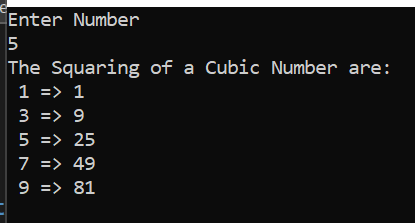
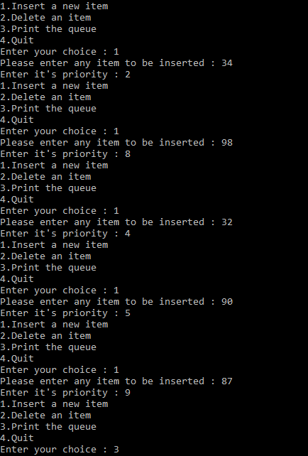

Tasks & Solution of Data Structure & Algorithm
1. linear search and sorting
1) Which type of sorting you want to apply? Create a menu having the following options:
I. Bubble Sort Method
II. Selection Sort Method
III. Insertion Sort Method
Implement using methods.
Output:
Source Code:
static void bubble(int[] array){
int n = array.Length;
int k;
for (int m = n; m >= 0; m--){
for (int i = 0; i < n - 1; i++){
k = i + 1;
if (array[i] > array[k]){
int temp;
temp = array[i];
array[i] = array[k];
array[k] = temp;}}}
for (int m = 0; m < array.Length; m++){
Console.Write(array[m] + " ");}
Console.ReadLine();}
static void selection(int[] arr){
int temp, smallest;
for (int i = 0; i < arr.Length - 1; i++)
smallest = i;
for (int j = i + 1; j < arr.Length; j++){
if (arr[j] < arr[smallest]){
smallest = j;}}
temp = arr[smallest];
arr[smallest] = arr[i];
arr[i] = temp;}
for (int m = 0; m < arr.Length; m++){
Console.Write(arr[m] + " ");}
Console.ReadLine();}
static void insertion(int[] Array){
for (int i = 0; i < Array.Length - 1; i++){
for (int j = i + 1; j > 0; j--){
if (Array[j - 1] > Array[j]){
int temp = Array[j - 1];
Array[j - 1] = Array[j];
Array[j] = temp;}}}
for (int m = 0; m < Array.Length; m++){
Console.Write(Array[m] + " ");}
Console.ReadLine();}
static bool Menu(int[] a) {
Console.WriteLine("\n\nWHICH TYPES OF SORTING YOU CHOOSE");
Console.WriteLine("1) BUBBLE SORT \n2) INSERTION SORT\n3) SELECTION SORT");
Console.Write("Select any One ? ");
switch (Console.ReadLine()){
case "1":
Console.WriteLine("\nBUBBLE SORT");
bubble(a);
return true;
case "2":
Console.WriteLine("\nINSERTION SORT ");
insertion(a);
return true;
case "3":
Console.WriteLine("\nSELECTION SORT ");
selection(a);
return true;
default:
return false;}}
static void Main(string[] args){
int[] arr = { 46,20,100,89,36,75,18,33,98,26,86,51};
Console.Write("Unsorted Array = ");
for(int i = 0; i
Console.Write(arr[i]+" ");}
bool a = true;
while (a){
a = Menu(arr);}}
2) Implement Selection sort and print string array data in descending order.
Output:
Source Code:
int smallest;
string temp;
for (int i = 0; i < array.Length; i++){
smallest = i;
for (int j = (i + 1); j < array.Length; j++){
if (array[smallest][0] > array[j][0]){
smallest = j;}}
temp = array[smallest];
array[smallest] = array[i];
array[i] = temp;}}
static void Main(string[] args){
Console.Write("Enter The Sixe Of Array : ");
int size = int.Parse(Console.ReadLine());
string[] array = new string[size];
for (int i = 0; i < array.Length; i++){
Console.Write("Enter Value At {0} Index : ", (i + 1));
array[i] = Console.ReadLine().ToLower();}
Console.Clear();
for (int i = 0; i < array.Length; i++){
Console.WriteLine("\t {0}",array[i]);}
Console.WriteLine("After Sorting In Decending Order \n");
SelectionSort(array);
for (int i = array.Length-1; i >= 0; i--){
Console.WriteLine("\t {0}", array[i]);}
3) A Detox chemical Industry has a list of chemicals along with their concentration and Volume. Your task is to list down the name of chemicals in descending order based on their Volume. In order to fulfil the task you have to select any of the sorting method taught in todays lab with proper reasoning of usage of that algorithm.
Output:

Source Code:
int[] vol , conc;
string[] name;
Console.Write("How many chemical which you buy ? ");
int n = int.Parse(Console.ReadLine());
vol = new int[n];
conc = new int[n];
name = new string[n];
for (int i = 0; i < n; i++){
Console.Write("\nEnter Name : ");
name[i] = Console.ReadLine();
Console.Write("Enter Volume : ");
vol[i] = int.Parse(Console.ReadLine());
Console.Write("Enter Concentraion : ");
conc[i] = int.Parse(Console.ReadLine());}
for (int i = 0; i < n - 1; i++){ for (int j = i + 1; j > 0; j--){
if (vol[j - 1] < vol[j]) {
int temp = vol[j - 1];
vol[j - 1] = vol[j];
vol[j] = temp;
string temp1 = name[j - 1];
name[j - 1] = name[j];
name[j] = temp1;
int temp2 = conc[j - 1];
conc[j - 1] = conc[j];
conc[j] = temp2; }}}
Console.WriteLine("\n\nNAME\t\tVOLUME\t\tCONC");
for (int i = 0; i < n; i++){
Console.WriteLine("{0,-16} {1,-15} {2}", name[i], vol[i], conc[i]);}
4) You have to write a program which take input from the user and place the value on correct location in ascending order.
Output:
Source Code:
Console.Write("Enter length of Array : ");
int n = Convert.ToInt32(Console.ReadLine());
Console.WriteLine("\nEnter Numbers :");
int[] arr = new int[n];
for (int i = 0; i < arr.Length; i++) {
arr[i] = Convert.ToInt32(Console.ReadLine()); }
for (int j = 0; j < arr.Length; j++){
int index = j;
for (int k = j; k < arr.Length; k++) {
if (arr[index] > arr[k]) {
index = k; }}
int temp = arr[index];
arr[index] = arr[j];
arr[j] = temp;}
Console.Write("\nSorting number is : ");
for (int l = 0; l < arr.Length; l++) {
Console.Write(arr[l]+" "); }
Console.ReadLine();
5) Write a program which take N numbers of grocery items from user along with their price. Your main task is to display the items in sorted format. Then allow user to search for any of the item from that list by using name of the item.
Output:

Source Code:
static void Main(string[] args){
Console.Write("Enter number of grocery items = ");
int num = int.Parse(Console.ReadLine());
String[,] groceryItems = new string [num,2];
for(int i = 0; i
Console.Write("\nEnter Grocery Name : ");
groceryItems[i, 0] = Console.ReadLine();
Console.Write("Enter Grocery Price : ");
groceryItems[i, 1] = Console.ReadLine();}
Console.WriteLine("\n1) Search Item\n2) Display Item along with Grocery Name\n3) Display Item along with Grocery Price");
Console.Write("\n\tSelect any option : ");
int choice = int.Parse(Console.ReadLine());
switch (choice){
case 1:
Console.Write("\n\nEnter Grocery Item for Searching : ");
String search = Console.ReadLine();
for (int i = 0; i < num; i++){
if (groceryItems[i, 0] == search){
Console.WriteLine("\n\tGrocery Item = " + search);
Console.WriteLine("\tGrocery Price = " + groceryItems[i, 1]);
break;}}
break;
case 2:
Console.WriteLine("\n--------------------------------");
Console.WriteLine("| Grocery Items\t |\tPrice |");
Console.WriteLine("--------------------------------");
String[] items_Sort = new string[num];
for (int i = 0; i < num; i++) {
items_Sort[i] = groceryItems[i, 0];}
Array.Sort(items_Sort);
for (int i = 0; i
for(int j = 0; j
if (items_Sort[i] == groceryItems[j,0]){
Console.WriteLine("| {0,-15}|\t{1,-6}|", groceryItems[j, 0], groceryItems[j, 1]);}}
if(i == num - 1){
Console.WriteLine("--------------------------------");}}
break;
case 3:
Console.WriteLine("\n--------------------------------");
Console.WriteLine("| Grocery Items\t |\tPrice |");
Console.WriteLine("--------------------------------");
int Price1 , Price2;
for (int i = 0; i < num - 1; i++){
for (int j = i + 1; j > 0; j--){
Price1 = int.Parse(groceryItems[j - 1, 1]);
Price2 = int.Parse(groceryItems[j , 1]);
if (Price1 > Price2){
String tempName = groceryItems[j - 1, 0];
String tempPrice = groceryItems[j - 1, 1];
groceryItems[j - 1, 0] = groceryItems[j, 0];
groceryItems[j - 1, 1] = groceryItems[j, 1];
groceryItems[j, 0] = tempName;
groceryItems[j, 1] = tempPrice;}}}
for(int i = 0; i
Console.WriteLine("| {0,-15}|\t{1,-6} |", groceryItems[i, 0], groceryItems[i, 1]);
if (i == num - 1){
Console.WriteLine("--------------------------------");}}
break;
default:
Console.WriteLine("\n\nYou Press Wrong Key");
break;}}
2. Linked List
1) Write a program to create a linked list and pertform:
*Traversing
Output:
Source Code:
Main Class:
LinkedList list = new LinkedList();
list.head = new Node(5);
Node second = new Node(10);
Node third = new Node(20);
list.head.next = second;
second.next = third;
list.printList();
Node Class:
public int data;
public Node next;
public Node(int d){
data = d;
next = null;}
LinkedList Class:
public Node head;
public void printList(){
Node n=head;
while(n!=null){
Console.WriteLine(n.data + "\n");
n = n.next;}}
2) Write a program to create a linked list and pertform:
*) Insertion
Output:
Source Code:
Main Class:
LinkedList list = new LinkedList();
list.head = new Node(5);
Node second = new Node(10);
Node third = new Node(20);
list.head.next = second;
second.next = third;
list.printList();
list.append(6);
list.push(7);
list.push(1);
list.insertAfter(list.head.next, 8);
Console.Write("\n\nCreated Linked list is: \n\n");
list.printList();
LinkedList Class:
public Node head;
public void printList(){
Node n=head;
while(n!=null){
Console.Write(n.data + " ");
n = n.next;}}
public void push(int new_data){
Node new_node = new Node(new_data);
new_node.next = head;
head = new_node;}
public void insertAfter(Node prev_node, int new_data){
if (prev_node == null){
Console.WriteLine("The given previous node cannot be null");
return;}
Node new_node = new Node(new_data);
new_node.next = prev_node.next;
prev_node.next = new_node;}
public void append(int new_data){
Node new_node = new Node(new_data);
if (head == null){
head = new Node(new_data);
return;}
new_node.next = null;
Node last = head;
while (last.next != null)
last = last.next;
last.next = new_node;
return;}
3) Write a program to create a linked list and pertform:
*Deletion
Output:
Source Code:
Main Class:
LinkedList list = new LinkedList();
list.head = new Node(5);
Node second = new Node(10);
Node third = new Node(20);
list.head.next = second;
second.next = third;
list.printList();
list.append(6);
list.push(7);
list.push(1);
list.insertAfter(list.head.next, 8);
Console.Write("\n\nCreated Linked list is: \n\n");
list.printList();
list.deleteNode(1);
LinkedList Class:
public void deleteNode(int key){
Node temp = head, prev = null;
if (temp != null &&
temp.data == key){
head = temp.next;
return;}
while (temp != null &&
temp.data != key){
prev = temp;
temp = temp.next;}
if (temp == null)
return;
prev.next = temp.next;}
3. Double linked list
1) Write a program to create a doubly linked list and pertform:
*Traversing
* Insertion
*Deletion
Output:
Source Code:
Main Class:
DLL dll = new DLL();
dll.head = new Node(1);
Node second = new Node(2);
Node third = new Node(3);
Node fourth = new Node(4);
Node fifth = new Node(5);
dll.head.next = second;
second.next = third;
third.next = fourth;
fourth.next = fifth;
fifth.prev = fourth;
fourth.prev = third;
third.prev = second;
second.prev = dll.head;
dll.printList(second);
dll.reverse(third);
dll.append(6);
dll.push(7);
dll.center(dll.head.next, 8);
Console.WriteLine("Created DLL is: ");
dll.printList(dll.head);
dll.deleteNode(dll.head.next);
Console.WriteLine("\nList after Deleting middle node: ");
dll.printList(dll.head);
Node head = null;
Console.WriteLine("\n\n* * * * AFTER DELETION * * * *");
dll.deleteNode(fourth);
dll.printList(dll.head);
Console.WriteLine("\n\n* * * * AFTER DELETION (AT GIVEN POSITION) * * * *");
dll.deleteNodeAtGivenPos(dll.head, 2);
dll.printList(dll.head);
DLL Class:
public Node head;
public void printList(Node node){
Node last = null;
Console.WriteLine("Traversal in Forward Direction");
while (node != null){
Console.Write(node.data + " ");
last = node;
node = node.next;}
Console.WriteLine("\nTraversal in Reverse Direction");
while (last != null){
Console.Write(last.data + " ");
last = last.prev;}}
public void reverse(Node node)
{
Console.WriteLine("\n Node value in Reverse Direction");
Node last = node;
while (last != null)
{
Console.Write(last.data + " ");
last = last.prev;}}
public void push(int new_data) {
Node new_Node = new Node(new_data);
new_Node.next = head;
new_Node.prev = null;
if (head != null) {
head.prev = new_Node;
head = new_Node;}}
public void center(Node prev_Node, int center_data){
Node center_Node = new Node(center_data);
if (prev_Node == null){
Console.WriteLine("The given previous node cannot be NULL ");
return;}
center_Node.next = prev_Node.next;
prev_Node.next = center_Node;
center_Node.prev = prev_Node;
if (center_Node.next != null){
center_Node.next.prev = center_Node;} }
public void append(int new_data){
Node new_node = new Node(new_data);
Node last = head;
new_node.next = null;
if (head == null){
new_node.prev = null;
head = new_node;
return;}
while (last.next != null)
last = last.next;
last.next = new_node;
new_node.prev = last;}
public void deleteNode(Node del) {
if (head == null || del == null)
return;
if (head == del)
head = del.next;
if (del.next != null)
del.next.prev = del.prev;
if (del.prev != null)
del.prev.next = del.next;
return;}
public void deleteNodeAtGivenPos(Node head, int n){
if (head == null || n <= 0)
return;
Node current = head;
int i;
for (i = 1; current != null && i < n; i++)
current = current.next;
if (current == null)
return;
deleteNode(current);
Node Class:
public int data;
public Node next;
public Node prev;
public Node(int d){
data = d;}
4. Stacks
1) Write a program to build your own stack class. The minimum your stack class should include is using your enrollment no :
A Push(Object) method
A Pop() method
A Peek() method
A IsFull() method
A IsEmpty() method
A Display() method
A Count() method
Output:
Main Class:
Source Code:
Stack myStack = new Stack();
Console.WriteLine("******* Push Method *******");
myStack.push(02131212007);
myStack.push(02131212008);
myStack.push(02131212009);
myStack.push(02131212010);
Console.WriteLine("\n******* Display Method *******");
myStack.printList();
Console.WriteLine("\n******* Peek Method *******");
myStack.peek();
Console.WriteLine("\n******* Full Method *******");
Console.WriteLine("Is the stack full? \n" + myStack.isFull());
Console.WriteLine("\n******* Pop Method *******");
Console.WriteLine("Items pop from top of stack is " + myStack.pop());
myStack.printList();
myStack.pop();
myStack.pop();
myStack.pop();
Console.WriteLine("\n******* Empty Method *******");
Console.WriteLine("The stack is empty {0} ", myStack.isEmpty());
Stack Class:
Source Code:
static readonly int max = 1000;
int top;
int[] stack = new int[max];
public bool isFull(){
return top >= max;}
public Stack(){
top = -1;}
internal bool push(int data){
if (top >= max){
Console.WriteLine("Stack Overflow");
return false;}
else{
stack[++top] = data;
return true;}}
internal int pop(){
if (top < 0){
Console.WriteLine("Stact Underflow");
return 0;}
else{
int value = stack[--top];
return value;}}
internal void peek(){
if (top < 0){
Console.WriteLine("Stack Underflow");
return;}
else{
Console.WriteLine("The top most value of Stack Array is {0} " + stack[top]);}}
internal void printList(){
if (top < 0){
Console.WriteLine("Stack Underflow");
return;}
else{
for (int i = top; i >= 0; i--){
Console.WriteLine(stack[i]);}}}
public bool isEmpty(){
return top < 0;}
5. Recursion
1) Write a code which prints the following series:
2 4 8 - - - - n
Output:
Source Code:
static int Recursion(int n,int data){
data *= 2;
Console.WriteLine("The Square of 2 is "+data);
return (n <= 1) ? 0 : Recursion(n - 1, data);}
static void Main(string[] args){
Console.WriteLine("Enter Numbers for printing Squaring");
int n = int.Parse(Console.ReadLine());
Recursion(n, 1);}
2) Write a program which calculates the square of a number using odd number series implemented with the help of recursion concept.
Output:

Source Code:
static int cubic(int n,int count,int data){
data = count*count;
Console.WriteLine(" "+count + " => "+data);
count += 2;
return n <= 1 ? 0 : cubic(n - 1, count,data);}
static void Main(string[] args){
Console.WriteLine("Enter Number ");
int n = int.Parse(Console.ReadLine());
Console.WriteLine("The Squaring of a Cubic Number are: ");
cubic(n, 1,1);}
3) Write a program which takes input of an integer number and returns the sum of all numbers. i.e., if input is 3453 then the output should be 15 (3+4+5+3).
Output:
Source Code:
static int recursion(int n,int sum){
sum = n % 10 + sum;
return (n == 0) ? sum : recursion(n / 10, sum);}
static void Main(string[] args){
Console.WriteLine("Enter Number ");
int n = int.Parse(Console.ReadLine());
Console.WriteLine("The Sum of {0} Number is ",n);
Console.WriteLine(recursion(n, 0));}
4) Calculation of number of moves for N number of disk in Tower of Hanoi problem using recursion.
Output:
Source Code:
static void towerOfHanoi(int n, char from_rod, char to_rod, char aux_rod, ref int moves){
if (n == 1){
moves += 1;
Console.WriteLine("Move disk 1 from rod " + from_rod + " to rod " + to_rod);
return;}
towerOfHanoi(n - 1, from_rod, aux_rod, to_rod, ref moves);
moves += 1;
Console.WriteLine("Move disk " + n + " from rod " + from_rod + " to rod " +
to_rod);
towerOfHanoi(n - 1, aux_rod, to_rod, from_rod, ref moves);}
static void Main(string[] args){
int moves = 0;
int disk = 4;
towerOfHanoi(disk, 'A', 'C', 'B', ref moves);
Console.WriteLine("\n\tTotal Moves = " + moves);
Console.ReadLine();}
5) Write a program to calculate H.C.F of two numbers, using recursion.
Output:
Source Code:
static int recursion(int num1,int num2){
if(num2==0 || num1 == num2){
return num1;}
else if (num1 == 0){
return num2;}
else if (num1 > num2){
return recursion(Math.Abs(num1 - num2), num2);}
else{
return recursion(num2,Math.Abs(num1 - num2));}}
static void Main(string[] args){
Console.WriteLine("Enter First Number ");
int num1 = int.Parse(Console.ReadLine());
Console.WriteLine("Enter Second Number ");
int num2 = int.Parse(Console.ReadLine());
Console.Write("The H.C.F of {0} and {1} Number is ",num1,num2);
Console.Write(recursion(num1, num2));}
6) Implement file code.
Output:
Source Code:
static void Main(string[] args){
File file = new File();
file.SearchForFiles(@"C:\Intel");
foreach(string filename in file.result){
Console.WriteLine(filename);}}
public Dictionary errors = new Dictionary();
public List result = new List();
public void SearchForFiles(string path){
try{
foreach (string fileName in Dictionary.GetFiles(path)){
result.Add(fileName);}
foreach (string directory in Directory.GetDirectories(path))
SearchForFiles(directory);}}
catch (System.Exception ex){
errors.Add(path, ex.Message);}}
6. Merge and Quick Sort
1) Implement recursive method of merge sort algorithm to sort an array of 10 characters.
Output:
Source Code:
Main Class:
char[] arr = { 'a','y','e','s','h','a','k','h','a',
'n'};
Sort sort = new Sort();
Console.Write("Before Sort = ");
sort.print(arr);
sort.mergeSort(arr, 0,9);
Console.Write("\nAfter Sort = ");
sort.print(arr);
Console.ReadKey();
Sort Class:
public class Sort {
public void mergeSort(char[] arr, int left, int right) {
if (left < right) {
int mid = (left + right) / 2;
mergeSort(arr, left, mid);
mergeSort(arr, mid + 1, right);
merge(arr, left, mid, right); } }
protected void merge(char[] arr, int left, int mid, int right) {
int size1 = (mid - left) + 1;
int size2 = right - mid;
char[] left_array = new char[size1];
char[] right_array = new char[size2];
int i = 0, j = 0;
while (i < size1) {
left_array[i] = arr[left + i];
i++; }
while (j < size2) {
right_array[j] = arr[mid + 1 + j];
j++; }
int k = left;
i = 0; j = 0;
while (i < size1 && j < size2) {
if (left_array[i].CompareTo(right_array[j]) > 0) {
arr[k++] = right_array[j++]; }
else {
arr[k++] = left_array[i++]; } }
while (i < size1) {
arr[k++] = left_array[i++]; }
while (j < size2) {
arr[k++] = right_array[j++]; } }
public void print(char[] arr) {
foreach (char item in arr) {
Console.Write(item + " "); }
Console.WriteLine(); } }
2) Implement Quick Sort Algorithm on string array using left value as first pivoting value.
Output:
Source Code:
Main Class:
string[] arr = { "shoaib", "akhter", "jawwad", "surfaraz", "hussain", "usama"};
Sort obj = new Sort();
Console.Write("Before Quick Sorting = ");
obj.printArray(arr);
obj.Quick(arr, 0, 5);
Console.Write("\n\nAfter Quick Sorting = ");
obj.printArray(arr);
Console.ReadKey();
Sort Class
internal class Sort {
private void swap(string[] arr, int l,int r) {
string temp = arr[l];
arr[l] = arr[r];
arr[r] = temp; }
public void printArray(string[] arr) {
foreach (string i in arr)
Console.Write("{0} ",i); }
public void Quick(string[] arr,int left,int right) {
if(left < right) {
int pivot_Position = partition(arr, left, right);
Quick(arr, left, pivot_Position - 1);
Quick(arr, pivot_Position + 1, right); } }
private int partition(string[] arr , int low, int high) {
string pivot = arr[low];
int i = low;
int j = high;
while (i < j) {
while (arr.Length > i && arr[i].CompareTo(pivot) <= 0)
i++;
while (arr[j].CompareTo(pivot) > 0)
j--;
if (i < j)
swap(arr, i, j);
else if(j < i)
swap(arr, j, low); }
return j; } }
7. Queues
1) Design & implement all methods of Simple Queue.
Output:
Source Code:
Main Class:
queue ob = new queue();
ob.isempty();
ob.enqueue(9);
ob.enqueue(6);
ob.enqueue(8);
ob.enqueue(1);
ob.enqueue(3);
ob.print();
ob.count();
ob.isfull();
ob.dequeue();
ob.dequeue();
ob.dequeue();
ob.dequeue();
ob.dequeue();
ob.print();
Queue Class:
int[] arr;
int front;
int rear;
public queue(){
arr = new int[5];
front = -1;
rear = -1;}
public bool isempty(){
if(front<0 || front>rear){
Console.WriteLine("Queue is Empty");
return true;}
else{
return false;}}
public bool isfull(){
if (rear == arr.Length - 1) {
Console.WriteLine("Queue is full");
return true;}
else{
return false}}
public void enqueue(int x){
if (rear == arr.Length - 1){
Console.WriteLine("Queue is full");}
else if (front == -1 || rear == -1){
front = 0;
rear = 0;
arr[rear] = x;}
else{
rear = rear + 1;
arr[rear] = x;}}
public void dequeue(){
if(front<0 || front>rear){
Console.WriteLine("Queue is Empty");}
else if(front==rear){
front = rear = -1;}
else{
front = front + 1;}}
public void count(){
if (front == -1){
Console.WriteLine("Queue is empty");}
else{
Console.WriteLine("Front value is " +arr[front]);}}
public void print(){
if (front ==-1){
Console.WriteLine("Queue is Empty");}
else{
for(int i = front; i <= rear; i++){
Console.WriteLine(arr[i]);}}
2) Design & implement all methods of Circular Queue.
Output:
Source Code:
Queue Class
int[] arr;
int front;
int rear;
public queue(){
arr = new int[5];
front = -1;
rear = -1;}
public bool isempty(){
if(front<0 || front>rear){
Console.WriteLine("Queue is Empty");
return true;}
else{
return false;}}
public bool isfull(){
if ((rear+1)%arr.Length==front) {
Console.WriteLine("Queue is full");
return true;}
else{
return false;}}
public void enqueue(int x){
if ((rear + 1) % arr.Length == front){
Console.WriteLine("Queue is full");}
else if (front == -1 || rear == -1){
front = 0;
rear = 0;
arr[rear] = x;}
else{
rear = (rear + 1)%arr.Length;
arr[rear] = x;}}
public void dequeue(){
if(front<0 || front>rear){
Console.WriteLine("Queue is Empty");}
else if(front==rear){
front = rear = -1;}
else{
front = (front + 1)%arr.Length;}}
public void count(){
if (front == -1){
Console.WriteLine("Queue is empty");}
else{
Console.WriteLine("Front value is " +arr[front]);}}
public void print(){
if (front ==-1){
Console.WriteLine("Queue is Empty");}
else if (rear >= front){
for (int i = front; i <= rear; i++)
Console.WriteLine( arr[i]);}
else{
for (int i = front; i < arr.Length; i++)
{ Console.WriteLine(arr[i]); }
for (int i = 0; i <= rear; i++)
{ Console.WriteLine(arr[i]); }}
3) Design and implement for Priority Queue.
Method 1: Ordering in/ after Enqueue method
Method 2: Separate queues for different priorities
Output:

Source Code:
Main Class:
int choice, item, itemPriority;
PriorityQueue p = new PriorityQueue();
while (true){
Console.WriteLine("1.Insert a new item");
Console.WriteLine("2.Delete an item");
Console.WriteLine("3.Print the queue");
Console.WriteLine("4.Quit");
Console.Write("Enter your choice : ");
choice = Convert.ToInt32(Console.ReadLine());
if (choice ==4)
break;
// Switch Case
switch (choice){
case 1:
Console.Write("Please enter any item to be inserted : ");
item = Convert.ToInt32(Console.ReadLine());
Console.Write("Enter it's priority : ");
itemPriority = Convert.ToInt32(Console.ReadLine());
p.Insert(item,itemPriority);
break;
case 2:
Console.WriteLine("Deleted item is: " + p.Delete());
break;
case 3:
p.Display();
break;
default:
Console.WriteLine("Wrong choice");
break;}
Node Class:
class Node{
public int priority;
public int information;
public Node link;
public Node(int info, int prior){
information = info;
priority = prior;
link = null;}}
// PriorityQueue Class
class PriorityQueue{
private Node front;
public PriorityQueue(){
front = null;}
//Insert Method
public void Insert(int item, int itemPriority){
Node temp, prio;
temp = new Node(item, itemPriority);
if (IsEmpty() || itemPriority < front.priority){
temp.link = front;
front = temp;}
else{
prio = front;
while (prio.link != null && prio.link.priority <= itemPriority)
prio = prio.link;
temp.link = prio.link;
prio.link = temp;}}
// Deletion of element Method
public int Delete(){
int item;
if ( IsEmpty() )
throw new System.InvalidOperationException("Queue Underflow");
else{
item = front.information;
front = front.link;}
return item;}
// Empty Method
public bool IsEmpty(){
return (front==null);}
// Display Method
public void Display(){
Node prio=front;
if ( IsEmpty())
Console.WriteLine("Queue is empty\n");
else{
Console.WriteLine("Queue is :");
Console.WriteLine("item Priority");
while (prio!=null){
Console.WriteLine(prio.information + " " + prio.priority);
prio=prio.link;}}
Console.WriteLine("");}}
8. BT , Bucket +Radix Sort
1) Implement bucket sort using linked list.
Output:
Source Code:
static void Main(string[] args){
Console.Write("Please enter the length of list : ");
int n = Convert.ToInt32(Console.ReadLine());
int[] array = new int[n];
for (int i = 0; i < n; i++){
Console.Write("element [{0}] = ", i);
array[i] = Convert.ToInt32(Console.ReadLine());}
// Printing of unsorted list
Console.Write("\nUnsorted List is : { ");
for (int i = 0; i < n; i++){
Console.Write( array[i] + " ");}
Console.WriteLine("}");
Console.WriteLine("\nList after applying Bucket Sort algorithm ");
Console.Write("{ ");
BucketSort(ref array);
array.ToList();
for (int i = 0; i < n; i++){
Console.Write(array[i] + " ");}
Console.WriteLine("}");
Console.WriteLine("\nHave a nice Day !!!");}
// Bucket Sort Method
public static void BucketSort(ref int[] array){
int minimum = int.MaxValue;
int maximum = 0;
for (int i = 0; i < array.Length; i++){
if (array[i] < minimum)
minimum = array[i];
if (array[i] > maximum)
maximum = array[i];}
List[] bucket = new List[maximum - minimum + 1];
for (int i = 0; i < bucket.Length; i++){
bucket[i] = new List();}
for (int i = 0; i < array.Length; i++){
bucket[array[i] - minimum].Add(array[i]);}
int k = 0;
for (int i = 0; i < bucket.Length; i++){
if (bucket[i].Count > 0){
for (int j = 0; j < bucket[j].Count; j++){
array[k] = bucket[i][j];
k++;}}}}
2) Create static tree and perform inorder, preorder and post order traversal. Also search a required node in the tree.
Output:
Source Code:
Binary Class:
class Binary{
public int root = 0;
public string[] str = new string[10];
public void Root(string key){
str[0] = key;}
public void print(){
for (int i = 0; i < 10; i++){
if (str[i] != null){
Console.Write(str[i] + " ");}
else{
Console.Write("-");}}
Console.WriteLine();}
public void Left(string key, int root_index){
int left_index = (root_index * 2) + 1;
if (str[root_index] == null){
Console.WriteLine("This " + root_index + " parent key is not exist");}
else{
str[left_index] = key;}}
public void Right(string key, int root_index){
int right_index = (root_index * 2) + 2;
if (str[root_index] == null){
Console.WriteLine("This " + root_index + " parent key is not exist");}
else{
str[right_index] = key; }}
public void InOrder(int root){
if (root < str.Length){
InOrder((root * 2) + 1);
Console.Write(str[root] + " ");
InOrder((root * 2) + 2); }}
public void PreOrder(int root){
if (root < str.Length){
if (str[root] != ""){
Console.Write(str[root] + " ");
PreOrder((root * 2) + 1);
PreOrder((root * 2) + 2);}}}
public void PostOrder(int root){
if (root < str.Length){
if (str[root] != ""){
PostOrder((root * 2) + 1);
PostOrder((root * 2) + 2);
Console.Write(str[root] + " ");}}}
public void Search(){
Console.WriteLine("Enter any element ");
string search = Console.ReadLine();
for (int i = 0; i < str.Length; i++){
if (string.Equals(search, str[i])){
Console.WriteLine("This " + search + " element is exist");
return;}}
Console.WriteLine("Sorry, this " + search + " element is not exist");}}
Main Class:
Binary b = new Binary();
b.Root("s");
b.Left("h",0);
b.Right("o", 0);
b.Left("a", 1);
b.Right("a", 1);
b.Left("i", 2);
b.Right("b", 2);
b.Left("l", 3);
Console.WriteLine("The Tree is:");
b.print();
Console.WriteLine("\n******** InOrder of a tree ********");
b.InOrder(0);
Console.WriteLine("\n\n******** Pre Order of a tree ********");
b.PreOrder(0);
Console.WriteLine("\n\n******** Post Order of a tree ********");
b.PostOrder(0);
Console.WriteLine("\n\n******** Searching ********");
b.Search();
9. BST and AVL
1) Write a program to implement concept of Binary Search Tree using dynamic trees
Output:
Source Code:
using System;
using System.Collections.Generic;
using System.Linq;
using System.Text;
using System.Threading.Tasks;
namespace Lab_12_BST{
class Program{
// Main Method
static void Main(string[] args){
Tree BST = new Tree();
BST.Insert(20);
BST.Insert(25);
BST.Insert(45);
BST.Insert(15);
BST.Insert(67);
BST.Insert(43);
BST.Insert(80);
BST.Insert(33);
BST.Insert(67);
BST.Insert(99);
BST.Insert(91);
Console.WriteLine("Inorder Traversal of BST: ");
BST.Inorder(BST.ReturnRoot());
Console.WriteLine(" ");
Console.WriteLine();
Console.WriteLine("Preorder Traversal of BST: ");
BST.Preorder(BST.ReturnRoot());
Console.WriteLine(" ");
Console.WriteLine();
Console.WriteLine("Postorder Traversal of BST: ");
BST.Postorder(BST.ReturnRoot());
Console.WriteLine(" ");
Console.ReadLine();
Console.WriteLine("Have a nice Day !!!");}}
//Node Class
class Node{
public int item;
public Node leftchild;
public Node rightchild;
public void display(){
Console.Write("[");
Console.Write(item);
Console.Write("]");} }
// Tree Class
class Tree{
public Node root;
public Tree(){
root = null;
public Node ReturnRoot(){
return root;}
public void Insert(int id){
Node newNode = new Node();
newNode.item = id;
if (root == null)
root = newNode;
else{
Node current = root;
Node parent;
while (true){
parent = current;
if (id < current.item){
current = current.leftchild;
if (current == null){
parent.leftchild = newNode;
return;}}
else{
current = current.rightchild;
if (current == null){
parent.rightchild = newNode;
return;}}}}}
public void Preorder(Node Root){
if (Root != null){
Console.Write(Root.item + " ");
Preorder(Root.leftchild);
Preorder(Root.rightchild); }}
public void Inorder(Node Root){
if (Root != null){
Inorder(Root.leftchild);
Console.Write(Root.item + " ");
Inorder(Root.rightchild);}}
public void Postorder(Node Root){
if (Root != null){
Postorder(Root.leftchild);
Postorder(Root.rightchild);
Console.Write(Root.item + " ");}}} }
2) Implement the AVL Tree by performing searching.
Output:
Source Code:
using System;
using System.Collections.Generic;
using System.Linq;
using System.Text;
using System.Threading.Tasks;
namespace Lab_12_AVL{
class Program{
//Main Method
static void Main(string[] args){
AVLtree tree = new AVLtree();
Console.WriteLine("data that you stored in the nodes of avl tree are as follows: ");
tree.Add(11);
tree.Add(4);
tree.Add(6);
tree.Add(1);
tree.Add(9);
tree.Add(12);
tree.display();
tree.Delete(4);
tree.Delete(1);
Console.WriteLine("after deleting nodes containing a data 4 & 1 from avl tree: ");
tree.display();
Console.Write("Enter the node you want to search in AVL Tree: ");
int node = int.Parse(Console.ReadLine());
tree.search(node);
Console.WriteLine("");
Console.ReadLine();
Console.WriteLine("Have a nice Day !!!");}}
//AVL Tree class
class AVLtree{
class Node{
public int data;
public Node left;
public Node right;
public Node(int data){
this.data = data;}}
Node root;
public AVLtree(){}
public void Add(int data){
Node newItem = new Node(data);
if (root == null){
root = newItem;}
else{
root = RecursiveInsert(root, newItem);}}
private Node RecursiveInsert(Node current, Node n){
if (current == null){
current = n;
return current;}
else if (n.data < current.data){
current.left = RecursiveInsert(current.left, n);
current = balance_tree(current);}
else if (n.data > current.data){
current.right = RecursiveInsert(current.right, n);
current = balance_tree(current);}
return current;}
private Node balance_tree(Node current) {
int b_factor = balance_factor(current);
if (b_factor > 1){
if (balance_factor(current.left) > 0){
current = RotateLL(current);}
else{
current = RotateLR(current);}}
else if (b_factor < -1){
if (balance_factor(current.right) > 0){
current = RotateRL(current); }
else{
current = RotateRR(current);}}
return current;}
public void Delete(int target){
root = Delete(root, target);}
private Node Delete(Node current, int target){
Node parent;
if (current == null)
{ return null; }
else{
if (target < current.data)
{
current.left = Delete(current.left, target);
if (balance_factor(current) == -2){
if (balance_factor(current.right) <= 0){
current = RotateRR(current);}
else{
current = RotateRL(current);}}}
else if (target > current.data){
current.right = Delete(current.right, target);
if (balance_factor(current) == 2){
if (balance_factor(current.left) >= 0){
current = RotateLL(current);}
else{
current = RotateLR(current);}}}
//if target is found
else{
if (current.right != null){
//delete its inorder successor
parent = current.right;
while (parent.left != null){
parent = parent.left;}
current.data = parent.data;
current.right = Delete(current.right, parent.data);
if (balance_factor(current) == 2)//rebalancing
{
if (balance_factor(current.left) >= 0){
current = RotateLL(current);}
else { current = RotateLR(current); }}}
else{
return current.left;}}}
return current;}
public void search(int key){
if (search(key, root).data == key){
Console.WriteLine(key + " was found in avl tree!");}
else if (search(key, root).data != key){
Console.WriteLine("Nothing found!");}}
private Node search(int target, Node current){
if (target < current.data){
if (target == current.data){
return current;}
else
return search(target, current.left);}
else{
if (target == current.data){
return current;}
else
return search(target, current.right);}}
public void display(){
if (root == null){
Console.WriteLine("Tree is empty");
return;}
InOrderDisplayTree(root);
Console.WriteLine();}
private void InOrderDisplayTree(Node current){
if (current != null) {
InOrderDisplayTree(current.left);
Console.Write("{0} ", current.data);
InOrderDisplayTree(current.right);}}
private int max(int l, int r){
return l > r ? l : r;}
private int getHeight(Node current){
int height = 0;
if (current != null){
int l = getHeight(current.left);
int r = getHeight(current.right);
int m = max(l, r);
height = m + 1;}
return height;}
private int balance_factor(Node current){
int l = getHeight(current.left);
int r = getHeight(current.right);
int b_factor = l - r;
return b_factor;}
private Node RotateRR(Node parent){
Node pivot = parent.right;
parent.right = pivot.left;
pivot.left = parent;
return pivot;}
private Node RotateLL(Node parent){
Node pivot = parent.left;
parent.left = pivot.right;
pivot.right = parent;
return pivot;}
private Node RotateLR(Node parent){
Node pivot = parent.left;
parent.left = RotateRR(pivot);
return RotateLL(parent);}
private Node RotateRL(Node parent){
Node pivot = parent.right;
parent.right = RotateLL(pivot);
return RotateRR(parent);}}}
10. Graphs
1) Create a program to implement Graphs With Adjacency matrix
Output:
Source Code:
using System;
namespace BST{
class Program{
static void Main(string[] args){
Console.WriteLine("Enter the number of Nodes : ");
int n = int.Parse(Console.ReadLine());
string[] arr = new string[n];
for (int i = 0; i < n; i++){
Console.WriteLine((i + 1) + " is connected to nodes?");
arr[i] = Console.ReadLine();}
int[,] array = new int[n, n];
for (int i = 0; i < array.GetLength(0); i++){
for (int j = 0; j < array.GetLength(1); j++){
string temp = "" + (j + 1);
if (arr[i].Contains(temp)){
array[i, j] = 1;}
else{
array[i, j] = 0;}}}
Console.Write(" ");
for (int i = 0; i < n; i++){
Console.Write(i + 1 + " ");}
Console.WriteLine();
for (int i = 0; i < array.GetLength(0); i++){
Console.Write((i + 1) + " ");
for (int j = 0; j < array.GetLength(1); j++){
Console.Write(array[i, j] + " ");}
Console.WriteLine();}
Console.WriteLine("Good Bye..!");}}}
2) Create a program to implement Graphs With Adjacency list.
Output:
Source Code:
using System;
namespace BST{
class Program{
static void Main(string[] args){
Console.WriteLine("Enter the number of nodes");
int n = int.Parse(Console.ReadLine());
string[] arr = new string[n];
for (int i = 0; i < n; i++){
Console.WriteLine((i + 1) + " is connected to nodes?");
arr[i] = Console.ReadLine();}
List[] obj = new List[n];
for (int i = 0; i < n; i++){
obj[i] = new List();
string[] temp = arr[i].Split(',');
for (int a = 0; a < temp.Length; a++){
obj[i].Add(int.Parse(temp[a]));}}
for (int i = 0; i < n; i++){
Console.Write((i + 1) + " => ");
for (int l = 0; l < obj[i].Count; l++){
Console.Write(obj[i][l] + " ");}
Console.WriteLine();}
Console.WriteLine("Good Bye...!");}}}
3) Create a program to implement BFS.
Output:
Source Code:
static void Main(string[] args){
Graph g = new Graph(6);
g.AddEdge(0, 1);
g.AddEdge(1, 2);
g.AddEdge(2, 3);
g.AddEdge(3, 4);
g.AddEdge(4, 5);
Console.WriteLine("Following is Breadth First");
g.BFS(1);
Console.WriteLine();}
class Graph{
private int _V;
LinkedList[] _adj;
public Graph(int V){
_adj = new LinkedList[V];
for (int i = 0; i < _adj.Length; i++){
_adj[i] = new LinkedList();}
_V = V;}
public void AddEdge(int v, int w){
_adj[v].AddLast(w);}
public void BFS(int s){
bool[] visited = new bool[_V];
for (int i = 0; i < _V; i++)
visited[i] = false;
LinkedList queue = new LinkedList();
visited[s] = true;
queue.AddLast(s);
while (queue.Any()){
s = queue.First();
Console.Write(s + " ");
queue.RemoveFirst();
LinkedList list = _adj[s];
foreach (var val in list){
if (!visited[val]){
visited[val] = true;
queue.AddLast(val);}}}}}
4) Create a program to implement DFS.
Output:
Source Code:
static void Main(string[] args){
Graph graph = new Graph(11);
graph.AddEdge(1, 2, false);
graph.AddEdge(2, 3, false);
graph.AddEdge(3, 4, false);
graph.AddEdge(1, 5, false);
graph.AddEdge(5, 6, false);
graph.AddEdge(6, 7, false);
graph.AddEdge(5, 8, false);
graph.AddEdge(1, 9, false);
graph.AddEdge(9, 10, false);
graph.DFS();
Console.WriteLine();}
public class Graph{
LinkedList[] linkedListArray;
public Graph(int v){
linkedListArray = new LinkedList[v];}
public void AddEdge(int u, int v, bool blnBiDir = true){
if (linkedListArray[u] == null){
linkedListArray[u] = new LinkedList();
linkedListArray[u].AddFirst(v);}else{
var last = linkedListArray[u].Last;
linkedListArray[u].AddAfter(last, v);}
if (blnBiDir){
if (linkedListArray[v] == null){
linkedListArray[v] = new LinkedList();
linkedListArray[v].AddFirst(u);}else{
var last = linkedListArray[v].Last;
linkedListArray[v].AddAfter(last, u);}}}
internal void DFSHelper(int src, bool[] visited){
visited[src] = true;
Console.Write(src + " ");
if (linkedListArray[src] != null){
foreach (var item in linkedListArray[src]){
if (!visited[item] == true){
DFSHelper(item, visited);}}}}
internal void DFS(){
Console.WriteLine("\t\tDFS");
bool[] visited = new bool[linkedListArray.Length + 1];
DFSHelper(1, visited);}}
11. Heap Sort
1) Write a program to implement concept of Heap Sort
Output:
Source Code:
using System;
using System.Collections.Generic;
using System.Linq;
using System.Text;
using System.Threading.Tasks;
namespace Lab11_AVL{
class HeapSort{
public static void Sort(int[] array){
int heapSize = array.Length;
// Build the heap
for (int i = heapSize / 2 - 1; i >= 0; i--){
Heapify(array, heapSize, i);}
for (int i = heapSize - 1; i >= 0; i--){
int temp = array[0];
array[0] = array[i];
array[i] = temp;
Heapify(array, i, 0);}}
private static void Heapify(int[] array, int heapSize, int index){
int largest = index;
int left = 2 * index + 1;
int right = 2 * index + 2;
if (left < heapSize && array[left] > array[largest]){
largest = left;}
if (right < heapSize && array[right] > array[largest]){
largest = right;}
if (largest != index){
int temp = array[index];
array[index] = array[largest];
array[largest] = temp;
Heapify(array, heapSize, largest);}}
static void Main(string[] args){
int[] array = { 3, 5, 1, 2, 4 };
Console.Write("\n Unsorted : ");
for (int i = 0; i < array.Length; i++){
Console.Write(array[i]+", ");}
HeapSort.Sort(array);
Console.Write("\n Sorted : ");
Console.Write(string.Join(", ", array)); // 1, 2, 3, 4, 5
Console.ReadLine();}}}